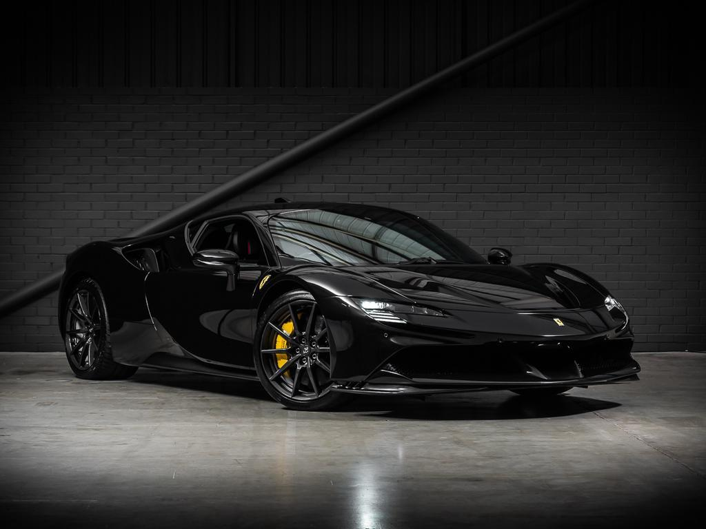

Bugatti La Voiture Noire

REMINISCENCE OF AN ICON A pioneering spirit, passion for perfection and the desire to continually redefine its limits have been the key characteristics of BUGATTI since it was founded more than 110 years ago . None of the brand’s masterpieces reflect these values more impressively than the Type 57 SC Atlantic. Created by Ettore Bugatti’s eldest son Jean, the only four Atlantics ever created stand for pure elegance and sophistication. With its homage to the fourth, all-black Atlantic, missing since the Second World War, BUGATTI is bringing the speed, technology, luxury and aesthetics of an icon into a new era. But the customized creation of “La Voiture Noire” is far more than a modern interpretation of the ghost of the gran turismo. “La Voiture Noire” is a tribute to BUGATTI’s own history, a manifesto of the BUGATTI aesthetic and a piece of automotive haute couture.
Ferrari SF90 Stradale
REMINISCENCE OF AN ICON A pioneering spirit, passion for perfection and the desire to continually redefine its limits have been the key characteristics of BUGATTI since it was founded more than 110 years ago . None of the brand’s masterpieces reflect these values more impressively than the Type 57 SC Atlantic. Created by Ettore Bugatti’s eldest son Jean, the only four Atlantics ever created stand for pure elegance and sophistication. With its homage to the fourth, all-black Atlantic, missing since the Second World War, BUGATTI is bringing the speed, technology, luxury and aesthetics of an icon into a new era. But the customized creation of “La Voiture Noire” is far more than a modern interpretation of the ghost of the gran turismo. “La Voiture Noire” is a tribute to BUGATTI’s own history, a manifesto of the BUGATTI aesthetic and a piece of automotive haute couture
Mclaren Senna

The McLaren Senna has a single-minded purpose. In the pursuit of the most rewarding and intuitive driving experience, pioneering active aerodynamics generate unprecedented levels of downforce. It is also the lightest vehicle we have built since the iconic F1, with our most powerful road car engine to date. This combination creates a staggering power-to-weight ratio of 668PS-per-tonne (659bhp). It is the most direct and responsive McLaren ever built, surpassing even the McLaren P1™ GTR, to create the purest connection with the driver. The McLaren Senna is a new track benchmark for McLaren. Our fastest track-focused road hypercar.